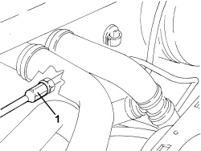
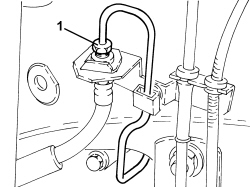

3340B41 RIGID PIPE FROM INTERMEDIATE CONNECTOR TO RIGHT FRONT BRAKE - R.R.
- Path
- Procedures > 33 BRAKES > 3340 ANTI-LOCK BRAKING SYSTEM (ABS) > 3340B ABS SYSTEM PIPES > 3340B41 RIGID PIPE FROM INTERMEDIATE CONNECTOR TO RIGHT FRONT BRAKE - R.R.
- Kind
- repair procedure (removal / refitting; the operation number is the code)
- Applies to
- engines: 3.2 JTS; all production periods
- Interactive page
- https://sloeber94.github.io/elrnDB-aBrrSpdr/en/#/946002148
Applies to: engines: 3.2 JTS; all production periods
 Removing
Removing
 Refitting
RefittingOp. 1072B50 AIR CHAMBER - R.R.
Op. 4450B04 RIGHT FRONT WHEEL - R.R
Op. 7055B91 RIGHT FRONT WHEEL ARCH LINER - R.R.
1. Undo the fixing nuts and move the engine coolant reservoir to one side.

Applies to: engines: 3.2 JTS; all production periods
- Unscrew the brake-clutch fluid reservoir plug and fit the tool.
Tool | Description | Function | Validity |
|---|---|---|---|
2000001400 | Plug | Brake/ clutch system vacuum |
1. Undo the intermediate connector for the rigid pipe.
- Release the rigid pipe from the retaining clips.

Applies to: engines: 3.2 JTS; all production periods
1. Disconnect the rigid pipe from the right front brake caliper flexible pipe.

Applies to: engines: 3.2 JTS; all production periods
Op. 1008B10 POWER UNIT FRONT SUPPORT FLEXIBLE MOUNTING (TIMING SIDE) - REPLACE
- Raise the power unit slowly using the arm lift until the rigid pipe can be removed.
Applies to: engines: 3.2 JTS; all production periods
Refitting
Removing- Place the rigid pipe in position and secure it to the retaining clips.
Op. 1008B10 POWER UNIT FRONT SUPPORT FLEXIBLE MOUNTING (TIMING SIDE) - REPLACE
- Tighten the connector connecting the rigid pipe to the right front brake caliper flexible pipe.
Component | Fastening | dia | Value (daNm) | Validity |
|---|---|---|---|---|
Brake pipe connectors | Connector | M10/M12 | 1.4 ÷ 1.8 |
- Tighten the right front brake rigid pipe intermediate connector.
Component | Fastening | dia | Value (daNm) | Validity |
|---|---|---|---|---|
Brake pipe connectors | Connector | M10/M12 | 1.4 ÷ 1.8 |
- Place the engine coolant reservoir in its housing.
Op. 7055B91 RIGHT FRONT WHEEL ARCH LINER - R.R.
Op. 4450B04 RIGHT FRONT WHEEL - R.R